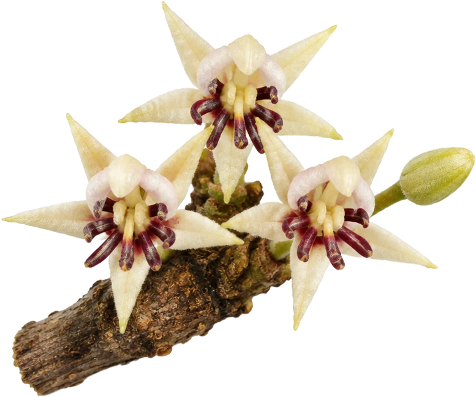

Kakao holandského typu s 20–22 % kakaového masla: tmavá farba, ktorá v bábovke ani zmrzline nevybledne
Alkalizovaný prášok z kakaovej hmoty, bez pridaného cukru, bez 14 alergénov EÚ. Do perníka, krémov, kakaa na pitie a zmrzliny. Certifikát k šarži pošleme na požiadanie.

- Cena
- 500 g / 270 Kč · pri vyzdvihnutí v dielni
- Objednávka
- +420 728 466 141 · juzlj@seznam.cz · denne 8–19
Uvedená cena je len za tovar. Sledovaná doprava, balenie a poistenie sa účtujú zvlášť.

Prečo záleží na tuku
Aby sa prášok smel nazývať kakao, musí podľa práva EÚ obsahovať najmenej 20 % kakaového masla; pod tým je to kakao so zníženým obsahom tuku. Naše má 20–22 %. Viac kakaového masla znamená tmavšiu farbu, plnšiu chuť a hladší krém.
Odkiaľ je
Bôby sú z kakaovníka Theobroma cacao zo západnej Afriky — najmä z Pobrežia Slonoviny, Ghany, Kamerunu a Nigérie. Fermentujú sa v banánových listoch a sušia na slnku. Pôdy v tejto oblasti majú prirodzene nízky obsah kadmia, preto ho má nízky aj naše kakao; hodnotu k šarži nájdete v laboratórnom certifikáte, ktorý pošleme na vyžiadanie. Kakao je alkalizované prírodnými soľami na pH 7,8–8,2 — preto je farba sýto červenohnedá a chuť okrúhla, bez kyslosti.
Čo v ňom nie je
Žiadny pridaný cukor (prirodzene 0,9 g cukru na 100 g). Žiadny zo 14 alergénov EÚ, lepok pod 20 ppm. Vegánske.
Kam ho dať
Pečenie
Perník, bábovka, brownies — cestá, ktoré majú zostať sýto kakaové aj po upečení.
Nápoje
Mliečne kakao a koktaily — v mlieku drží farbu aj krémovú chuť.
Krémy
Náplne a krémy — prášok bez pridaného cukru.
Posyp
Rezy, rolády a bebe dezerty — tmavý jemný prášok, ktorý sa nehrudkuje.
S vanilkovým pudingom
Zamiešajte do nášho vanilkového pudingu: čokoládový krém z dvoch zmesí.
Zmrzlina
Hladká textúra a tmavá farba, ktorá v mraze nevybledne.
Čo v kakau je
Na 100 g podľa nutričnej tabuľky na obale: veľa vlákniny a bielkovín, prirodzene málo cukru, žiadny pridaný cukor.
K tomu horčík 490 mg, draslík 4 400 mg a železo 31 mg na 100 g.
Údaje na 100 g podľa nariadenia EÚ 1169/2011. Kakao používate po lyžiciach — hodnoty na porciu sú zlomkom tabuľky.
Technické údaje
- Kakaové maslo20,0–22,0 %
- pH (10 % roztok)7,8–8,2
- Jemnosťmin. 99,5 % pod 75 µm
- Vlhkosťmax. 5,0 %
- Šupkymax. 1,75 %
- Ťažké kovyv limitoch nariadenia (EÚ) 2023/915
- Alergény EÚžiadne zo 14
- Lepok< 20 ppm
- Stravavegánske, vegetariánske
Skladovanie
V suchu, mimo silných pachov, ideálne pri 15–20 °C a vlhkosti pod 50 %.
Pre cukrárne a zmrzlinárov
Množstevná cena, certifikát k šarži, odber alebo doprava. Dopyt pošlite cez stránku Pre kuchyne.
Časté otázky
Prečo sa cena kakaa mení?
Kakao je burzová komodita: cenou hýbe počasie, dopyt a nové limity EÚ na ťažké kovy. Cenník upravujeme, keď sa zmení náš nákup.
Je to raw kakao?
Nie. Je alkalizované (holandské) a pražené. Raw kakao je nepražené a chutí horko a trávnato; to naše je jemné a okrúhle, s praženými tónmi.
Hodí sa do zmrzliny?
Áno. Vyšší podiel kakaového masla dáva zmrzline hladkú textúru a tmavú farbu, ktorá v mraze nevybledne.
Odkiaľ pochádza naše kakao?
Zo západnej Afriky — najmä z Pobrežia Slonoviny, Ghany, Kamerunu a Nigérie. Je to kakaovník Theobroma cacao. Bôby sa fermentujú v banánových listoch, sušia na slnku a potom sa melú a alkalizujú na holandský typ.
Prečo má kakao z dielne Jůzlová nízky obsah kadmia?
Kadmium sa do bôbov dostáva z pôdy. Vysoké hodnoty máva kakao z vulkanických pôd časti Latinskej Ameriky, napríklad z Peru a Ekvádoru. Západoafrické pôdy obsahujú kadmia málo, a tak ho má málo aj kakao, ktoré odtiaľ pochádza. Limit EÚ pre kakaový prášok je 0,60 mg/kg (nariadenie (EÚ) 2023/915); hodnotu našej šarže máme v laboratórnom certifikáte a pošleme ho na vyžiadanie.
A čo olovo?
V západnej Afrike je to hlavný sledovaný kov. Drží sa na šupke bôbu, nie v jadre, a odchádza so šupkou pri lúpaní pred mletím. Aj olovo nájdete v certifikáte k šarži.